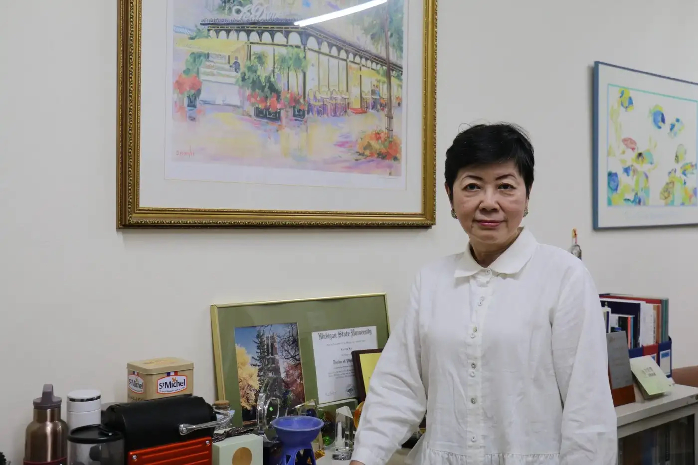

走進台大新聞所305研究室，映入眼簾的除了藏書豐富的書櫥、代表學術成就的證書獎座、與學生的合照之外，牆上多幅畫作及可愛逗趣的裝飾小物更是吸睛，反映出谷玲玲老師優雅的文藝氣質。伴隨著空氣中瀰漫的咖啡香，準備在2月正式退休的谷玲玲被問到離開學校後的生活，卻直言「我沒有什麼退休規劃耶！」
記者／劉騏瑋
谷玲玲老師研究室牆上，掛了大幅色彩繽紛的畫作，展現其對藝術的喜好。（攝影／劉騏瑋）
「我沒有什麼規劃。應該是說，我沒有特別想過退休後就要做什麼，或不做什麼，一切都是go with the flow。」谷玲玲說，雖然曾有過各種對退休生活的想像，但實際到了那一天，想法似乎又都變了。在面臨人生轉換期的此刻，她不急著起步，希望先把自己的身心安頓好，慢慢迎接下一段新生活的開始。
回顧谷玲玲的教學生涯，甫從美國回台時曾在交大傳播所教書3年，之後來到台大新聞所任教。「剛來時我很喜歡台大的環境。在這裡不管修課、教課或做研究，自由度都很高。」自由的學術環境與豐富的資源，讓她在這裡一待就是26年。
谷玲玲具有多年媒體實務經驗，在臺大新聞所任教期間，指導歷屆學生，目前仍有不少人在實務界發揮長才。谷玲玲主授研究方法，並開授資訊科技與社會、英文新聞寫作等課程。在所有任教的課程中，「英文新聞寫作」的實務課程，對谷玲玲來說不僅能發揮過去在美國的教學專長、傳承曾在英文媒體的工作經驗，也透過這門課看見不同學生的特質。在疫情前，此門課的學生組成非常多元，除了本所學生，還包括英國、澳洲、法國、義大利等地的外籍生，甚至吸引理工科系學生修習。「以前的學生膽子比較大，願意接受挑戰，（儘管）修得滿頭包也很起勁，」她觀察，現在的同學面對英語課程普遍保守，或許是擔心英文不夠好、壓力太大。
基於多年的教學經驗，谷玲玲想要對學生提供什麼建議呢？她鼓勵同學不要自我設限、上課時多主動發問，「台灣同學普遍還是太乖，不太在課堂上發言，遇到課題可能也是悶著頭做，但老師其實是可以被挑戰的。」她坦言，老師也會想要知道年輕學生關心什麼？對事件的看法是什麼？師生之間能夠教學相長，新舊世代之間有交流的火花，這對老師而言不只是最開心的事，也是成長的養分。
採訪當下，距離退休僅剩不到2個月，但谷玲玲的研究室依然擺放著許多書籍，桌椅、擺設依舊，絲毫看不出打包痕跡。「這已經是花了半年陸續整理的結果了，以前東西更多，書都堆在地上！」說起過去的壯觀書山景象，對她來說仍歷歷在目。面對這些年在台大新聞所累積的點點滴滴，該如何為這趟豐富旅程畫下句點？谷玲玲早已想好一套劇本，「我幻想的狀況是什麼都不帶走，只帶私人的東西，最後熄燈離開。」語畢，她喃喃地自問自答，像是在與內在的自己對話，或者說再次確認，「但人真的可以這麼灑脫嗎？我覺得就是要練習啊。」
走進台大新聞所305研究室，映入眼簾的除了藏書豐富的書櫥、代表學術成就的證書獎座、與學生的合照之外，牆上多幅畫作及可愛逗趣的裝飾小物更是吸睛，反映出谷玲玲老師優雅的文藝氣質。伴隨著空氣中瀰漫的咖啡香，準備在2月正式退休的谷玲玲被問到離開學校後的生活，卻直言「我沒有什麼退休規劃耶！」
「我沒有什麼規劃。應該是說，我沒有特別想過退休後就要做什麼，或不做什麼，一切都是go with the flow。」谷玲玲說，雖然曾有過各種對退休生活的想像，但實際到了那一天，想法似乎又都變了。在面臨人生轉換期的此刻，她不急著起步，希望先把自己的身心安頓好，慢慢迎接下一段新生活的開始。
回顧谷玲玲的教學生涯，甫從美國回台時曾在交大傳播所教書3年，之後來到台大新聞所任教。「剛來時我很喜歡台大的環境。在這裡不管修課、教課或做研究，自由度都很高。」自由的學術環境與豐富的資源，讓她在這裡一待就是26年。
谷玲玲具有多年媒體實務經驗，在臺大新聞所任教期間，指導歷屆學生，目前仍有不少人在實務界發揮長才。谷玲玲主授研究方法，並開授資訊科技與社會、英文新聞寫作等課程。在所有任教的課程中，「英文新聞寫作」的實務課程，對谷玲玲來說不僅能發揮過去在美國的教學專長、傳承曾在英文媒體的工作經驗，也透過這門課看見不同學生的特質。在疫情前，此門課的學生組成非常多元，除了本所學生，還包括英國、澳洲、法國、義大利等地的外籍生，甚至吸引理工科系學生修習。「以前的學生膽子比較大，願意接受挑戰，（儘管）修得滿頭包也很起勁，」她觀察，現在的同學面對英語課程普遍保守，或許是擔心英文不夠好、壓力太大。
基於多年的教學經驗，谷玲玲想要對學生提供什麼建議呢？她鼓勵同學不要自我設限、上課時多主動發問，「台灣同學普遍還是太乖，不太在課堂上發言，遇到課題可能也是悶著頭做，但老師其實是可以被挑戰的。」她坦言，老師也會想要知道年輕學生關心什麼？對事件的看法是什麼？師生之間能夠教學相長，新舊世代之間有交流的火花，這對老師而言不只是最開心的事，也是成長的養分。
採訪當下，距離退休僅剩不到2個月，但谷玲玲的研究室依然擺放著許多書籍，桌椅、擺設依舊，絲毫看不出打包痕跡。「這已經是花了半年陸續整理的結果了，以前東西更多，書都堆在地上！」說起過去的壯觀書山景象，對她來說仍歷歷在目。面對這些年在台大新聞所累積的點點滴滴，該如何為這趟豐富旅程畫下句點？谷玲玲早已想好一套劇本，「我幻想的狀況是什麼都不帶走，只帶私人的東西，最後熄燈離開。」語畢，她喃喃地自問自答，像是在與內在的自己對話，或者說再次確認，「但人真的可以這麼灑脫嗎？我覺得就是要練習啊。」